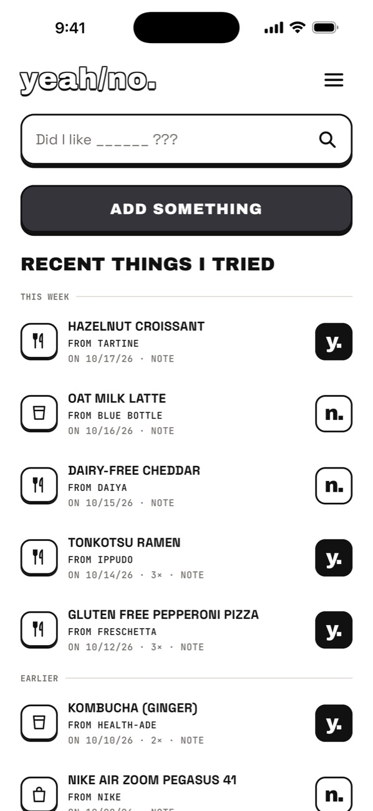
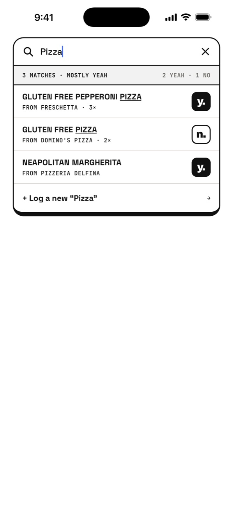
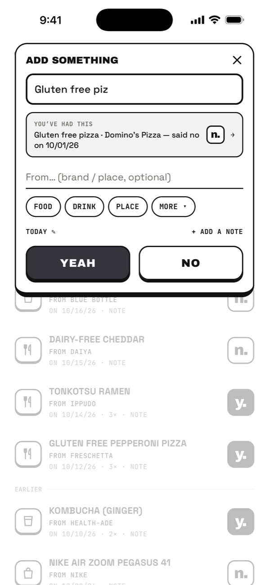
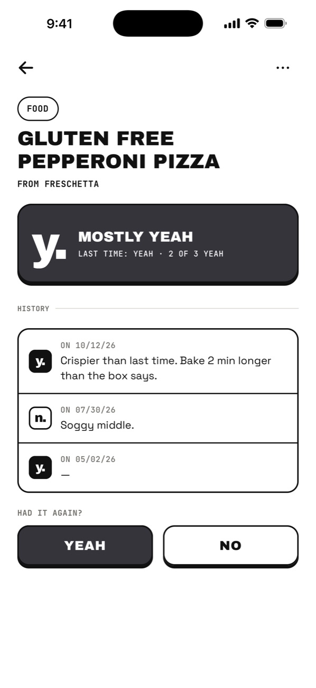
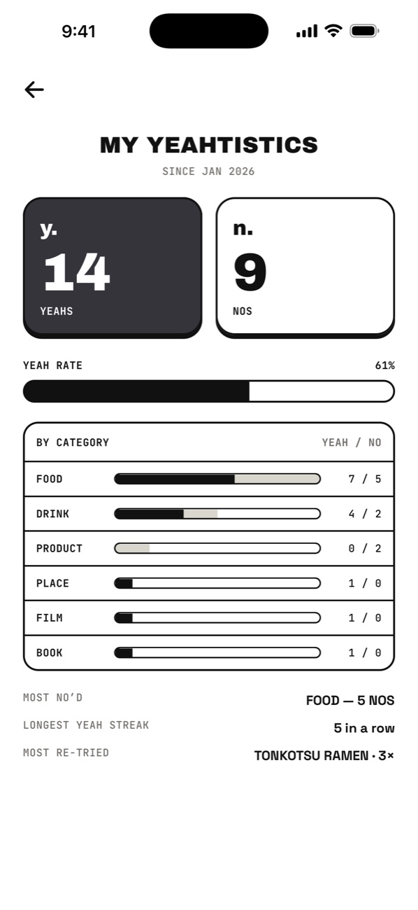

Free on iPhone
Did I like this?
yeah/no is the fastest way to remember what you liked — and what you didn’t. Log anything you try in two taps. Next time you’re standing in the aisle, search it and know in a second.
Download on the App Store
How it works
Log it now. Know it later.
01
Add something
Tried something new — a coffee, a frozen pizza, a film? Tap ADD SOMETHING and type what it was.
02
y. or n.
Tap YEAH or NO. That one tap saves it. A brand or a note is optional.
03
Search it later
Next time it comes up, search it. You’ll see what you said before you finish typing.
Inside the app
Brutally simple. A little bit loud.
Log it in two taps
Remember what you liked.
Everything you’ve tried, newest first, each one stamped y. or n. — so the answer is on the first screen you see.
Search answers first
Did I like it? Know in a second.
Type “pizza” and the verdict comes before the list: 3 matches, mostly yeah. Typos are fine — “dominos” finds Domino’s.

The verdict is the save
Two taps. Yeah or no.
Name it, tap YEAH or NO, done. Had it before? It tells you while you type — “said no on 10/01” — before you make the same mistake twice.

Every time you had it
Tastes change. It remembers.
Logging something again adds to its history instead of making a duplicate, with the note from each time.

Your yeahtistics
Your taste, in numbers.
Yeah rate, favourites by category, your longest yeah streak and the thing you keep coming back to.

The small print
Simple on purpose.
01
No sign-up wall
Open it and start logging. Back up with an email whenever you like — or never.
02
Private by default
Nobody else sees your logs. No ads, no tracking. Export to CSV or delete everything, any time.
03
Free
Logging and search are free, always. Nothing to unlock to use the thing.
Questions
Fair enough.
How do I log something?
Tap ADD SOMETHING, type what it was, then tap YEAH or NO. Brand, date and a note are optional.
I tried it again — do I add it again?
Yes. Logging the same name adds to that item’s history instead of making a duplicate.
Are my logs public?
No. Only you can see them.
I got a new phone.
If you backed up (Settings → Back up with email), sign in on the new phone.
How do I delete my data?
In the app: Settings → Delete account & all data. It’s immediate and permanent. Or email us and we’ll do it for you.
Is it free?
Yes. No ads, no account required, nothing to unlock to log or search.
Something else?
Email mariano@cats22.agency — a human reads every message.